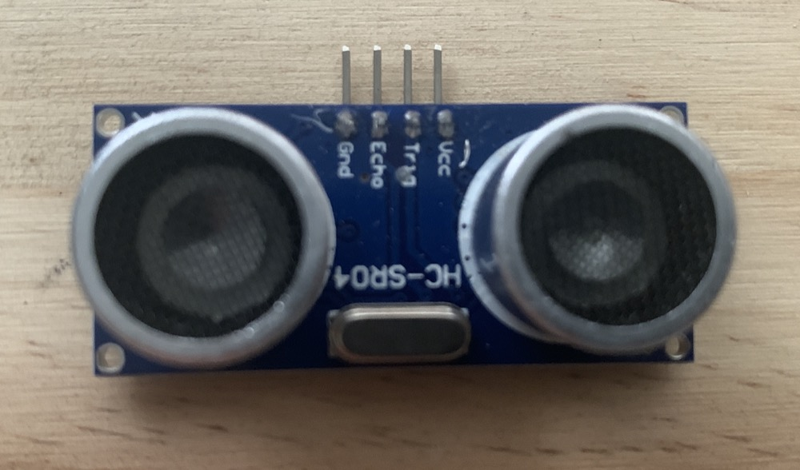
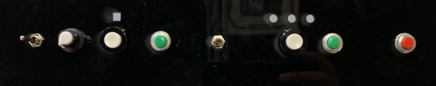
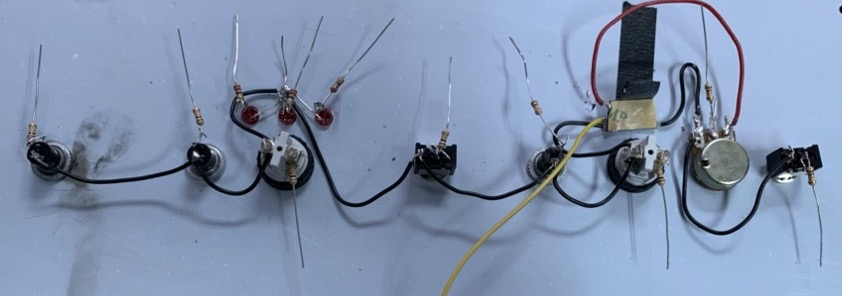

<!DOCTYPE html>
<html lang="en"></html>
<head>
  <meta charset="utf-8">
  <meta content="IE=edge" http-equiv="X-UA-Compatible">
  <meta content="width=device-width, initial-scale=1" name="viewport">
  <title> Rafael Rebolleda — Fab Academy 2020 Documentation</title>
  <!-- Google Fonts-->
  <link rel="stylesheet" href="https://fonts.googleapis.com/css?family=Catamaran&amp;display=swap">
  <link rel="stylesheet" href="../css/main.css">
</head>
<body> 
  <nav>
    <header>
      <ul>
        <li>Rafael Rebolleda</li>
        <li>ESNE (+ LEON)</li>
        <li>Madrid, Spain</li>
      </ul>
      <p class="bio">CX consultant and professor. Single, semi-remote Fab Acadeny student.</p>
    </header>
    <ol>
      <li><a class="red" href="../">About me</a></li>
      <li><a class="blue" href="../FP/">Final Project</a></li>
      <li><a class="blue" href="../DEV/">Project Development</a></li>
    </ol>
    <h1>Assignments</h1>
    <ol> 
      <li><a href="../W1/">Principles & Practices</a></li>
      <li><a href="../W2/">Computer Aided Design</a></li>
      <li><a href="../W3/">Computer Controlled Cutting</a></li>
      <li><a href="../W4/">Electronics Production</a></li>
      <li><a href="../W5/">3D Scan + Printing</a></li>
      <li><a href="../W6/">Electronics Design</a></li>
      <li><a href="../W7/">Computer Controlled Machining</a></li>
      <li><a href="../W8/">Embedded Programming</a></li>
      <li><a href="../W9/">Input Devices      </a></li>
      <li><a href="../W10/">Applications & Implications</a></li>
      <li><a href="../W11/">Output Devices</a></li>
      <li><a href="../W13/">Intellectual Property</a></li>
      <li><a href="../W15/">Molding & Casting</a></li>
      <li><a href="../W16/">Wildcard: Waterjet CCC</a></li>
    </ol>
  </nav>
  <main>
    <h1>W9: Input Devices</h1>
    <h2>Analog sensor</h2>
    <p>For this assignment I tried the classic HC-SR04 ultrasound sensor. </p>
    <p>It works  by sending a sound pulse and listening back for the echo. Then it's a matter of doing the math with the speed of sound.</p>
    <p>The one thing I found is that it's a little finicky with voltage, so working on 3.3V produced somewhat inconsistent results, so I ended up powering the sensor independently.</p>
    <video src="ultrasound_1.mp4" autoplay loop mute controls></video>
    <h2>Input devices for the final project</h2>
    <h3>External button</h3>
    <p>My first approach was to grab one of the push buttons I planned on using for the <a href="../FP/">Final Project's</a> control panel, and quickly test it. It's just basically the same sketch used in <a href="../W8/">Embedded Programming</a> but changing the pin number.</p>
    <video src="ext_button.mp4" autoplay loop mute controls></video>
    <h3>The Control Panel</h3>
    <p>Like many others, bacuase of access and purchasing constraints due to the pandemic, I had to make do with stuff I had laying around to design a control panel for the <a href="../FP/">Final Project's</a> machine.</p>
    <p> The control panel contains a number of digital and analog inputs and <a href="../W11/">outputs</a>:</p>
    <ul>
      <li>[IN] Two switches</li>
      <li>[IN] Five push buttons</li>
      <li>[IN] One potentiometer</li>
      <li>[OUT] Three LEDs</li>
      <li>[OUT] One Neopixel</li>
    </ul>
    <p>All inputs make use of a resistor to make the reading more stable:</p>
    <p>In the following examples I'm using the switches just to toggle an LED:</p>
    <video src="control_panel_1.mp4" autoplay loop mute controls></video>
    <video src="control_panel_3.mp4" autoplay loop mute controls></video>
    <p>In this case the potentiometer is controlling the delay between LED flashes</p>
    <video src="control_panel_2.mp4" autoplay loop mute controls></video>
    <p>In the next one, I'm using a push button to cycle through the LEDs.</p>
    <video src="control_panel_4.mp4" autoplay loop mute controls></video>
    <h2>Files</h2>
    <ul>
      <li><a href="sensor.zip">Ultrasonic Sensor Code</a></li>
    </ul>
  </main>
  <footer>
    <hr>
    <p><a rel="license" href="http://creativecommons.org/licenses/by-nc/4.0/"></a><br />This work is licensed under a <a rel="license" href="http://creativecommons.org/licenses/by-nc/4.0/">Creative Commons Attribution-NonCommercial 4.0 International License</a>.</p>
  </footer>
</body>